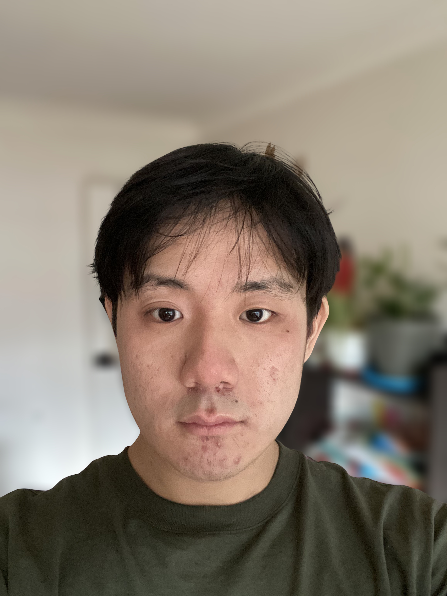

Dongze YANG Technicien Réseaux & Systèmes
Étudiant en BTS SIO SISR à Ingetis Paris, je développe mes compétences en administration système, sécurité réseau et infrastructure informatique.
À Propos de moi

Dongze YANG
Étudiant BTS SIO SISR
👤 Qui suis-je ?
Passionné par les infrastructures, je me spécialise en SISR à INGETIS pour devenir administrateur réseaux.
🎯 Post-BTS
Après mon BTS, je souhaite m'orienter vers une licence professionnel en système et réseaux et plus tard essayer d'aller en Master Universitaires ou en écoles d'ingénieurs.
💼 Expériences
- ▶Installation complète du système d'exploitation Windows
- ▶Sauvegarde et restauration de données
- ▶Configuration de postes de travail
- ▶Diagnostic et résolution de pannes matérielles et logicielles
- ▶Support aux utilisateurs
- ▶Paramétrage des comptes utilisateurs et accès réseau
- ▶Installation complète du système d'exploitation Windows
- ▶Sauvegarde et restauration de données
- ▶Configuration de postes sur le réseau
- ▶Diagnostic et résolution de pannes matérielles et logicielles
- ▶Support aux utilisateurs
- ▶Paramétrage des comptes utilisateurs et accès réseau
🎓 Parcours
INGETIS Paris
Ingetis est une école supérieure d'informatique de référence, spécialisée dans l'alternance. Elle forme les futurs experts du numérique à travers une pédagogie concrète, du Bac+2 au Master.
🎓 Cycle BTS
- • CYCLE SIO
- • BAC +2
🎓 Cycle Bachelor
- • CYCLE BACHELOR
- • BAC +3
BTS SIO Option SISR
Le brevet de technicien supérieur « Services informatiques aux organisations » est un diplôme d'État formant aux enjeux de la cybersécurité, de l'administration système et du support utilisateur.
Durée
2 ans de spécialisation
Expérience
10 semaines de stage pro
Crédits
120 Crédits ECTS
Parcours SISR
Administration des réseaux, gestion des infrastructures et sécurisation des données.
Parcours SLAM
Conception d'applications, développement de logiciels et gestion de bases de données.
Compétences Techniques
Découvrez mes compétences acquises à travers ma formation BTS SIO SISR et mes expériences professionnelles.
Support et mise à disposition des services informatiques
Windows Server
Compétence acquise en BTS SIO SISR via des TP et projets. Installation et configuration de services AD et DHCP sur des VM.
Windows 11
Expérience personnelle et en environnement de test. Installation, configuration système, gestion des comptes utilisateurs et dépannage.
Windows 10
Expérience personnelle et en environnement de test. Installation, configuration système, gestion des comptes utilisateurs et dépannage.
Linux
Autoformation et BTS : installation/configuration sur Debian, Arch Linux et Ubuntu. Expérience sur dual boot et environnements virtualisés.
GLPI
Utilisé dans le cadre du BTS. Installation, configuration de base, gestion des tickets et inventaire de parc informatique simulé.
Active Directory
Manipulation dans des environnements de TP. Création de comptes, groupes, stratégies de sécurité et GPO.
Administration des systèmes et des réseaux
🌀 Proxmox
Virtualisation de serveurs via Proxmox durant les projets de BTS. Création de VM, configuration de clusters, snapshots.
📡 Cisco
TP sur Packet Tracer en BTS SIO SISR : configuration de routeurs, VLAN, adressage IP, routage statique/dynamique.
💻 VMware
Utilisé pour la virtualisation d'environnements Windows/Linux lors de projets personnels et en laboratoire scolaire.
📦 VirtualBox
Utilisé pour la virtualisation d'environnements Windows/Linux lors de projets personnels et en laboratoire scolaire.
🐬 MySQL
Manipulation via projets Web et TP SQL. Création de bases de données, gestion des utilisateurs, sécurisation.
🔍 DNS
TP BTS : configuration de zones DNS, résolution de noms, intégration avec Active Directory.
🔌 DHCP
Mis en place sur Windows Server et Debian en TP pour l'attribution automatique d'adresses IP.
Cybersécurité des services informatiques
Wireshark
Analyse du trafic réseau en temps réel, observation de trames (modèle OSI) et détection d'anomalies ou de protocoles non sécurisés en TP.
Kali Linux
Utilisation en environnement isolé pour l'autoformation : scans de vulnérabilités avec Nmap et initiation aux tests d'intrusion éthiques.
VPN
Mise en place de tunnels chiffrés pour sécuriser les accès distants. Notions sur les protocoles OpenVPN et IPsec.
Pare-feu
Configuration de règles de filtrage (UFW / IPTables) pour autoriser ou bloquer le trafic entrant/sortant selon les besoins de sécurité.
Automatisation et scripting
Bash
Création de scripts d'automatisation sous Linux : gestion des sauvegardes, tâches planifiées (CRON) et administration système.
PowerShell
Automatisation de l'administration Windows et Active Directory : création d'utilisateurs en masse et rapports système.
Python
Développement de petits outils utilitaires et scripts réseaux. Utilisation de bibliothèques pour le traitement de données.
Ansible
Initiation à l'Infrastructure as Code (IaC) : déploiement de configurations via des playbooks YAML sur des serveurs distants.
C / C++
Bases de la programmation structurée et orientée objet. Compréhension de la gestion mémoire et de la logique logicielle.
Développement Web
HTML / CSS
Conception d'interfaces web modernes et responsives. Maîtrise des structures de page et du stylisage avancé.
PHP
Développement back-end pour la création de sites dynamiques. Gestion des sessions, des formulaires et de la logique serveur.
SQL
Conception et manipulation de bases de données relationnelles. Requêtes complexes (JOIN, GROUP BY) et optimisation de données.
Java
Apprentissage de la Programmation Orientée Objet (POO). Développement d'applications robustes et structurées.
Projets & Travaux Pratiques
Cliquez sur chaque projet pour accéder à la documentation technique associée.
Windows Server 2022
Installation du système, configuration IP statique et paramétrage post-installation.
📄 Consulter la docActive Directory
Promotion en contrôleur de domaine, création de la forêt et des premières GPO.
📄 Consulter la docPostes Windows 10 & 11
Déploiement, partitionnement et intégration au domaine Active Directory.
📄 Consulter la docDebian 12
Installation NetInstall, configuration du réseau et gestion des paquets APT.
📄 Consulter la docServeur Apache2
Mise en place du service HTTP et configuration des Virtual Hosts sur Debian.
📄 Consulter la docInstallation GLPI
Déploiement de la solution de gestion de parc et lien avec la base de données SQL.
📄 Consulter la docL'ère du Passkey
Objectif : Zéro Trust
Ma veille se concentre sur la technologie Passkey (FIDO2/WebAuthn), le pilier de l'authentification moderne sans mot de passe.
En tant que futur technicien SISR, mon objectif est de comprendre comment cette révolution asymétrique élimine le phishing en entreprise tout en s'intégrant aux infrastructures existantes (Microsoft Entra, YubiKey).
Standard Asymétrique
Compréhension du standard FIDO2. L'échange de clés asymétriques garantit que le secret (la clé privée) ne quitte jamais l'appareil de l'utilisateur, rendant l'interception inutile.
Déploiement Entra ID
Suivi de l'intégration des Passkeys dans Microsoft 365. Analyse des politiques de sécurité pour imposer l'usage de Windows Hello ou de clés de sécurité physiques.
Disponible pour un stage, une alternance ou simplement pour échanger. N'hésitez pas à me contacter !